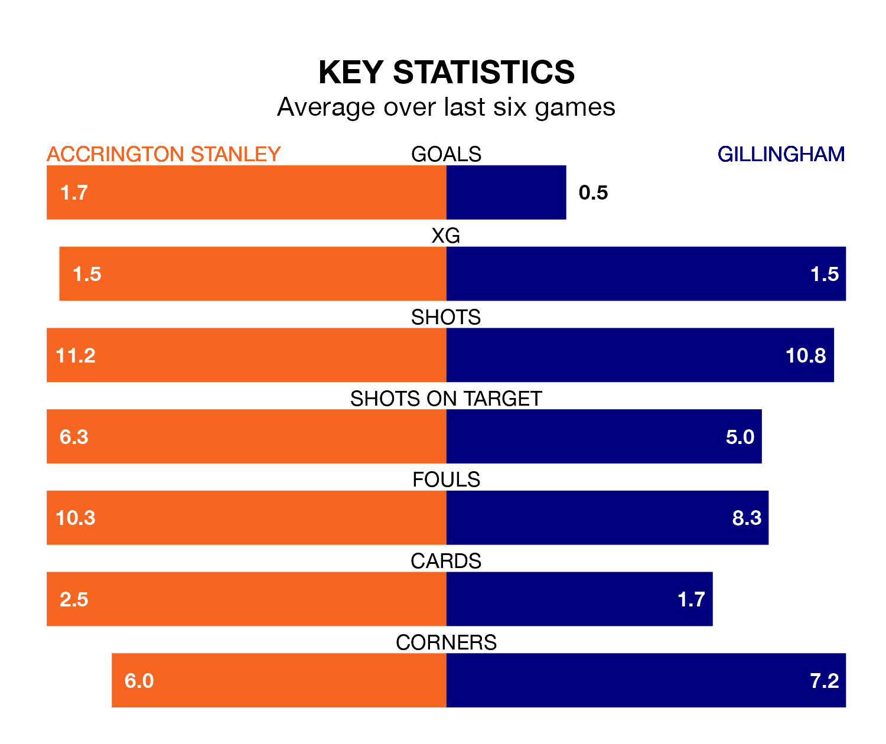

Accrington Stanley host Gillingham on Saturday at the Wham Stadium in EFL League Two.
In their last league match, on January 1, Accrington beat Salford City 3-0 at home, with goals from Jack Nolan (two) and Shaun Whalley.
Gillingham also won, 1-0 away at Colchester United, with Scott Malone scoring their goals.
In Jake Turner, Gillingham can rely on one of the league's safest pair of hands. He has kept 10 clean sheets in his 25 appearances this season, and no 'keeper has prevented the opposition scoring more often in EFL League Two.
In Accrington's net, Jon McCracken has three clean sheets in 11 games. He has conceded a goal every 65 minutes, 20% more often than the 75 minutes between goals for Turner.
With 21 goals in 25 games so far this season, the Gills are the league's lowest scorers with 0.8 goals per game. But they are conceding fewer than average too, letting in 30 goals at a rate of 1.2 per game.
Stanley, meanwhile, are average scorers, with 1.5 goals per game. They have conceded 1.4 goals per game.
In the last three years, Accrington and Gillingham have played each other on four occasions. Gillingham won three of them and they drew once.
On average, Accrington scored 0.2 goals and the Gills 1.0 in those matches.
Their last meeting was on August 12, when Gillingham won 1-0 at home.
The hosts are 10th in the table after 26 games, of which they have won 11 and drawn five, earning 38 points.
The away team are one place behind Accrington in 11th, with 12 wins and two draws putting them on the same number of points.
Accrington are in mixed form in EFL League Two, with two wins and three draws from their last six games.
With three wins and a draw over that period, Gillingham's form is slightly better – they have taken 10 points from 18, compared to Stanley's nine.
Updated: 15:34, 08/01/24